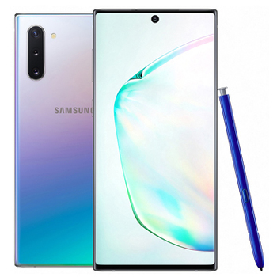
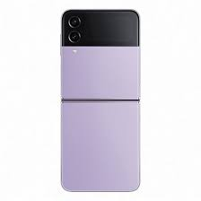
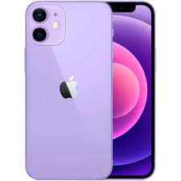
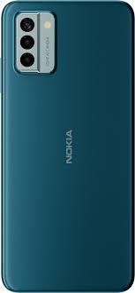
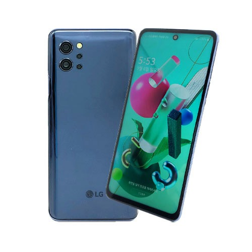

스마트폰(Smartphone)은 휴대 전화에 여러 컴퓨터 지원 기능을 추가한 지능형 단말기로, 응용 소프트웨어 설치가 자유로운 것이 특징이며, 인류 역사에 혁신적인 기여를 한 위대한 물건중 하나로 평가받는다. 사실상 휴대전화 기능을 탑재한 포터블 컴퓨터라고 보면 될 정도로 오늘날 PC나 TV 라디오 등의 기능들을 전부 합친 기계이다.
3G 공통 주파수를 이용하는 등 통신 규격이 유사해 보급이 원활한 인터넷이 되는 폰. 1997년 초부터 언론에서 스마트폰 보도를 본격적으로 하기 시작했다.
안드로이드는 ㅇ휴대전화를 비롯함 ~~ 소프트웨어이다.
아이폰은 2007년 1월9일, 애플이 발표한 휴대전화 시리즈이다.발표했다 스티브 잡스가
|  |  |  |  |  |